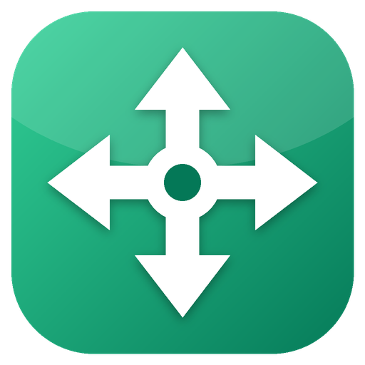

Snapperr
Snap any window into place with your keyboard. Free for Windows and Mac.
Windows
Windows 10 and 11 (.exe), updates itself Download Mac
macOS 11 or newer, Apple Silicon and Intel (.dmg), preview Download
Windows 10 and 11 (.exe), updates itself Download Mac
macOS 11 or newer, Apple Silicon and Intel (.dmg), preview Download
How it works
| Ctrl Ctrl | Double-tap Ctrl: snap mode turns on for 10 seconds, with a soft sound and a tiny counter. |
| Ctrl Ctrl Ctrl | Triple-tap Ctrl: pick how many columns (2 to 9) with ↑ ↓ and Enter. Starts on 4. |
| Ctrl + ← ↓ → | Left, center or right third |
| Ctrl + L / ; | Left or right half |
| Ctrl + F | Full screen |
| Ctrl + 1 … 9 | Put the window in that column, counting from the left |
| Ctrl + Shift + arrow | Move the window 20 px. Size stays the same. |
| Ctrl + Shift + Alt + arrow | Resize 20 px. Position stays the same. |
| Esc | Snap mode off |
Every key press keeps snap mode on for 10 more seconds. When it is off, these keys work normally in your apps. On Mac, use Control and Option.
Install on Windows
- Run the installer. No admin rights needed. If Windows warns you, click More info → Run anyway.
- Snapperr starts right away and every time you sign in. Its icon sits in the tray.
- When a new version is out, Snapperr asks you (it checks every hour). You can also right-click the tray icon → Update.
Or from PowerShell: irm https://snapperr.skillsgeek.com/install.ps1 | iex installs Snapperr and the snapperr command. Later, snapperr update updates it and snapperr version shows the version.
Install on Mac
- Open the .dmg and drag Snapperr into Applications.
- Snapperr is not signed by Apple, so macOS blocks the first start. Open System Settings → Privacy & Security, scroll down and click Open Anyway.
- If macOS says the app is “damaged”, run this once in Terminal:
xattr -dr com.apple.quarantine /Applications/Snapperr.app - Allow Accessibility when Snapperr asks. macOS needs this before an app can move windows.
- If ⌃ + ← switches desktops instead, turn that off in System Settings → Keyboard → Keyboard Shortcuts → Mission Control.